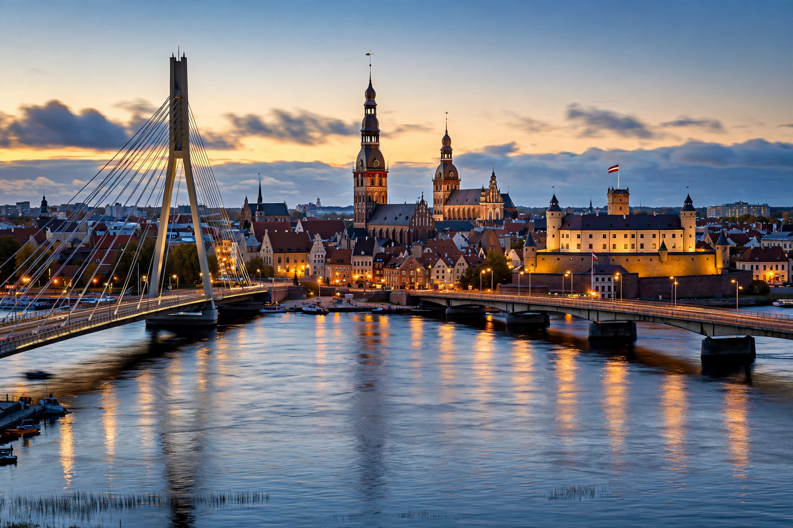

[Image placeholder: Riga's Old Town and the Daugava]| Country | Latvia |
|---|---|
| Founded | 1201 |
| Population | About 610,000 |
| River | Daugava |
| Known for | Largest collection of Art Nouveau architecture in Europe |
**Riga** is the capital and largest city of Latvia, on the Gulf of Riga at the mouth of the Daugava River. The largest city of the Baltic states, it was founded in 1201 by Bishop Albert of Bremen and grew as a German merchant city of the Hanseatic League; its historic centre is a UNESCO World Heritage Site famous for the world's finest concentration of Art Nouveau (Jugendstil) buildings.
Riga passed through Polish, Swedish and Russian imperial hands — under the Russian Empire it became a great industrial port — and was capital of independent Latvia (1918–40), was occupied by the USSR and Nazi Germany (its Jewish population was murdered in the Rumbula massacre of 1941), and again became capital when Latvia restored independence in 1991. The Freedom Monument (1935), the Central Market in former Zeppelin hangars, and the Latvian National Museum anchor the modern city.
The medieval Old Town (Vecrīga) of churches and guildhalls contrasts with the nineteenth-century boulevard ring and the Alberta Street Art Nouveau district, where Mikhail Eisenstein (father of the film director) designed exuberant facades. Across the river rise the Soviet-era Academy of Sciences tower and the National Library ('Castle of Light', 2014).